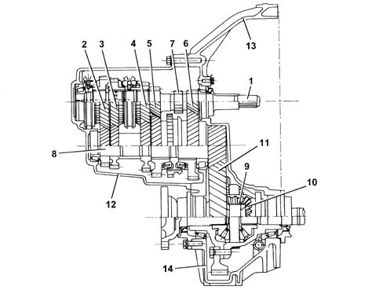
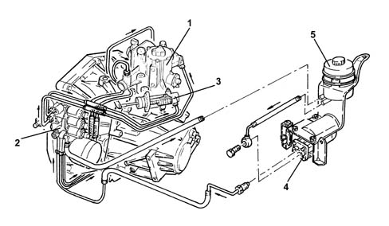
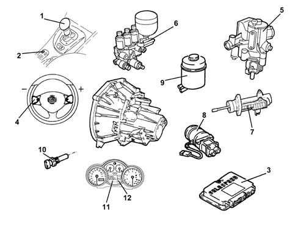
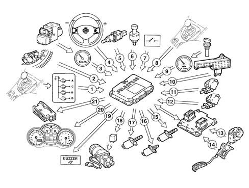
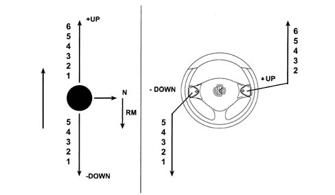

INTRODUCTION - GEARBOX
- Path
- Descriptions > 21 GEARBOX UNIT > INTRODUCTION - GEARBOX
- Kind
- system description
- Applies to
- all engines; all production periods; only with equipment: Smart gearbox
- Interactive page
- https://sloeber94.github.io/elrnDB-aGt/en/#/125000327
Applies to: all engines; all production periods
COMPOSITION
CONSTRUCTION
Five/six speed transverse gaerbox with two shafts supported by conical bearings and an additional shaft for Reverse gear with twin idler gears with synchromesh.
The external controls have a twin cable.
STRUCTURE
The structure of the gearbox consists of:
- a gearbox casing with a 'closed end' configuration with the rear cover eliminated. This contains and support the main and layshaft, the gear engagement selector forks and rods and the gear selector/engagement device.
- the bell housing which contains the clutch, the thrust bearing and the control device.
In addition to the 'whipping effect', the gears are also lubricated by means of ducts inside the:
- clutch casing and gearbox casing;
- 3rd and 4th speed control rod;
- main shaft.
The improved lubrication of the ducts makes it possible to:
- improve the efficiency of the lubrication;
- reduce the amount of oil used thanks to the lubrication aimed at the main couplings.
The use of ZC 75 S synthetic multi-grade oil ensures improved manoeuvrability at low temperatures.

1 - Main shaft
2 - 5th speed drive gear
3 - 4th speed drive gear
4 - 3rd speed drive gear
5 - 2nd speed drive gear
6 - 1st speed drive gear
7 - Reverse speed drive gear
8 - Layshaft
9 - Satellite gears
10 - Planet gears
11 - Ring gear
12 - Gearbox casing
13 - Clutch casing
14 - Differential support housing
Applies to: engines: 3.2 V6; all production periods; only with equipment: Smart gearbox
CONSTRUCTION FEATURES
INTRODUCTION
This electronically-controlled manual gearbox is known as a 'selespeed' unit.
A conventional manual transmission (single dry clutch plate and synchronised C.530.6 gearbox) is connected to an electronically-controlled hydraulic device that manages the clutch and gear shifts.

1. Hydraulic selection device
2. Hydraulic actuation unit
3. Clutch control actuator
4. Electric pump
5. Fluid reservoir
This use of this system does not impose any changes to the clutch and internal gearbox mechanism.
Only the bellhousing requires modification to accommodate hydraulic actuators controlling the clutch and gear selection/shifts.
The clutch pedal has been eliminated and car take-off is achieved by means of the accelerator pedal alone.
The gearbox can work in two operating modes:
- semiautomatic, manual, when the driver requests gear changes by operating a lever on the central console or buttons on the steering wheel;
- automatic, known as 'CITY' where the system decides when to shift gear.
The advantages of this type of system are as follows:
- the driver no longer needs to operate the clutch pedal and gear lever but can still enjoy all the driving satisfaction that comes from direct control of the transmission;
- driving safety is increased because the control system prevents driver error and improper use of the transmission system;
- improved performance by conventional manual transmission components (reduced clutch wear).
GENERAL VIEW
.

1. Gear selection lever
2. CITY button
3. Selespeed electronic control unit
4. Gear selection levers on steering wheel
5. Hydraulic selection device
6. Hydraulic actuation unit
7. Clutch control actuator
8. Electric pump
9. Fluid reservoir
10. Transmission input rpm sensor
1. Gear selection display
12. Fault warning light
GENERAL CHARACTERISTICS
The electronic gearbox management allows:
- identification of driver reqeusts
- car operating conditions to be assessed by means of signals from sensors
- speed shifts to be managed by direct control of the clutch, gearbox and drive torque.
The control unit performs the task of:
- downloading signals from the various sensors;
- interfacing with the accelerator pedal (potentiometer and motorised throttle);
- interfacing with the injection control unit;
- controlling the hydraulic system;
- controlling an information display and buzzer.
The control unit uses the following signals for the management of these strategies:
- engine rpm (via the engine control unit),
- transmission input rpm sensor;
- clutch position sensor;
- gear selector position sensor;
- gear engagement position sensor;
- accelerator pedal potentiometer/motorised throttle (via injection control unit);
- ignition key;
- driver's door switch;
- brake pedal switch;
- hydraulic unit fluid pressure;
- CAN line signal (coolant temperature, engine torque).
DIAGRAM OF INPUT/OUTPUT INFORMATION TO/FROM THE CONTROL UNIT
.

1. Gear selector lever switch
2. Engine rpm sensor (CAN line from engine management control unit) (2)
3. Vehicle speed (CAN line from ABS control unit)
4. Gear selection lever
5. Brake pedal switch
6. Oil pressure sensor
7. Driver's door switch
8. CITY button
9. Transmission input rpm sensor
10. Clutch position sensor
11. Gear selection postion sensor
12. Gear engagement position sensor
13. DVE integral throttle body
14. Accelerator pedal with integral potentiometer (CAN line from engine control unit)
15. Proportional pressure solenoids (no. 2)
16. On-off solenoid (no. 1)
17. Proportional flow solenoid
18. Electric pump
19. Buzzer
20. Instrument panel
21. Diagnostic socket
USAGE OF THE SYSTEM
Operations to be carried out for starting/driving vehicle
START-UP STAGE
- Press the brake pedal,
- start up the vehicle,
- engage the gear (1st , 2nd or Reverse) for setting off (with the brake pedal pressed), using the lever (when setting off the control on the steering wheel is not received).
DRIVING STAGE:
- remove your foot from the brake or accelerator pedal,
- then operate the controls (lever or the steering wheel).

The CITY control is located on the tunnel, near the gear lever and allows the activation of the automatic gear change function.
Horn
A buzzer warns the driver of the following:
- system faults
- improper use (e.g. clutch overheating)
- car safety (e.g. doors open).
Incorrect or inconsistent driver operation
The Selespeed system prevents incorrect driver operation that could cause dangerous situations or be detrimental to the system.
The strategies are:
- the lever control takes priority if simultaneous requests are made using both the steering wheel lever and the tunnel lever;
- reverse gear cannot be engaged with the vehicle moving;
- a gear change request is not accepted with the car in motion if the request leads to rpm levels that are too high or too low;
- only 1st gear, 2nd gear and Reverse gear can be engaged with the vehicle stationary and the engine running.
The system has been designed taking into account the possibility that incorrect manoeuvres that could create dangerous situations could be requested allowing:
- the engine can only be started with a gear engaged if the vehicle is stationary, the accelerator pedal released and the brake pedal pressed (the system initially places the gearbox in automatic neutral and then enables the starting of the engine);
- with the car at a standstill (or virtually still), gear change requests are accepted only if the brake pedal is pressed (applies also to neutral). This prevents dangerous situations in case the lever/buttons on the steering wheel are accidentally operated by someone else or even by the driver;
- disabling of the steering wheel buttons at vehicle speeds of less than 15 km/h, thereby preventing possible driver error during parking manoeuvres;
- inhibition of the 'neutral' control above a preset speed, thereby preventing incorrect operation in critical situations, for example, downhill;
- CITY mode cancellation when the driver selects the gear directly using the lever/buttons, the driver's selection takes priority in this situation.
- automatic engagement of neutral and buzzer warning the driver for a limited period in the following cases: insufficient oil pressure for the management of the clutch, engine started and door open (starting with the door open is, however permissible because the driver's action on the brake or the accelerator is detected), engine started with gear engaged and no sign of operation of accelerator or brake for more than 5 secs., gear engaged and accelerator released and brake pedal pressed for at least 30 secs.;
- independent gear change if the driver insists outside of the rev range without changing gear.
SYSTEM OPERATION
Turning on the system
This takes place by turning the ignition key. The system informs the driver, through the instrument display, of the gear engaged and, after 1 - 2 secs., the system is capable of accepting new gear changes from the lever only.
With the engine switched off
Any gear whatsoever can be engaged (including Reverse) and neutral can be engaged; these operations can only be carried out with the brake pedal depressed.
Engine starting
The system only enables the starting enablement relay if the gearbox is in neutral which the system automatically does when the brake pedal is pressed at the time of starting.
Vehicle take off / acceleration
Only 1
st
gear, 2
nd
gear or Reverse can be engaged for setting off after starting. For safety reasons 1
st
and 2
nd
gears can only be engaged with the brake pedal pressed, whilst for Reverse gear in addition to this condition the vehicle must also be at a complete standstill.
When the brake pedal is released and the accelerator pedal operated, the system gradually closes the clutch and allows the vehicle to set off.
Modulating the position of the accelerator pedal allows the system to meter the torque transmitted by the clutch and consequently the acceleration of the vehicle.
When the system detects synchronism between the engine and clutch speeds, it closes the clutch completely.
Vehicle slowing down
When the accelerator is released the system recognizes the intention to slow the vehicle down and automatically reopens the clutch to prevent the engine from stalling.
This reopening takes place at an engine speed that depends on the deceleration and the controls implemented by the driver (brake pressed or not).
When slowing down, if the speed engaged is higher than 3
rd
, the system automtically shifts down.
When the vehicle stops, 1
st
gear is engaged automatically.
Vehicle downhill
When the vehicle is driving downhill, a gear is engaged and the accelerator pedal is released, the speed increases, but as the preset speed in the control unit is reached, the clutch is automatically closed again to provide an engine braking effect; if the accelerator is pressed again, the driver resumes control of the vehicle.
Gear shift
With the vehicle moving and the clutch completely closed, the system is capable of accepting gear shift commands if they are compatible with the rpm range.
Gear shifts can be implemented, as described previously, using the controls on the steering wheel or the joystick on the tunnel (if the lever and the steering wheel lever are operated simultaneously, the lever takes priority).
Once a gear shift request has been accepted, the shift is carried out according to an automatic sequence that reflects actual driver behaviour:
- engine torque reduction through a command from the Selespeed control system to the engine control system with the simultaneous opening of the clutch;
- release, selection and engagement of the new gear (parallel to this stage the engine is controlled so that the speed for the clutch after the engagement of the new gear can be reached);
- modulated clutch closure and simultaneous gradual return to maximum possible torque delivery by the engine. When the system detects synchronism between the engine and clutch speeds, the clutch is completely closed;
- a gear shift in progress may be interrupted at any time by a new request provided that it is compatible with the engine rpm range;
- the actuator control sequences during a gear shift are accompanied by waiting, allowing the repetition of the control if the outcome is not correct the first time, engaging a higher gear than requested.
Automatic gear shift (city mode)
The Selespeed system has an automatic operating mode, similar to the one on conventional automatic transmissions.
The selection of the speed to engage is made using a (single) map that correlates the position of the accelerator pedal, the vehicle speed and the optimum gear.
If the accelerator pedal is released, the system keeps the clutch as closed as possible to allow maximum engine braking.
Gears are shifted in exactly the same way as during semiautomatic operation. The same transmission and engine control parameters are used.
Request to shift to neutral
With the engine off the brake pedal must be pressed, as described previously.
With the vehicle moving, this request is not accepted above a preset vehicle speed.
Switching off the engine and the system
With the ignition key in the OFF position, the engine switches off and the Selespeed system keeps the gear selected engaged. The Selespeed system is only completely deactivated after having received a 'nil speed' input from the engine, gearbox input, gearbox output and after having saved the functional and diagnostic data in the control unit stable memory (all of this takes place in less than 2 seconds).
Information for the driver
The information for the driver concerning the operation of the Selespeed system is transmitted through a display located in the centre of the instrument that indicates the gear engaged or the CITY mode or the failure of the system.
A buzzer signals the improper use of the vehicle, or an unsafe situation or the failure of the system (e.g. improper use may be starting with the clutch overheating, an unsafe situation could be leaving the vehicle not in gear).
Push-starting
The car can be push-started as follows:
- turn the ignition key to the ON position;
- check the warning light has gone off (after 10 seconds);
- with the car running at a certain speed and the gearbox in neutral, shift up a gear (+) using the selection lever.